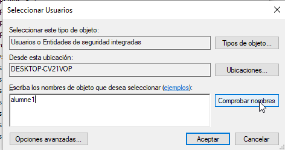
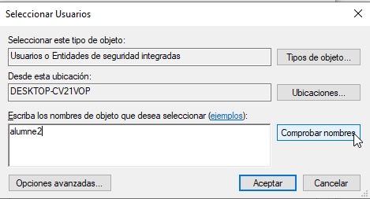
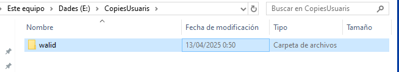

Sprint 6
Gestio de Processos
Administrador de Tasques
L'administrador de tasques es l'aplicacio grafica per defecte que te Windows per administrar els processos.
Aquest te dos modes, un senzill i un mes complet.
L'administrador de tasques es pot obrir de la seguent forma:
Fent clic dret a la barra inferior, seguidament cliquem l'opcio de l'administrador de tasques.
Simple
El mode simple de l'administrador de tasques solament mostrara les aplicacions que s'estan executan actualment al sistema en primer pla.
Avansat
Per entrar en el mode avansat, clicarem al boto de mes detalls situat en la seccio inferior esquerra.
El mode avansat te diferentes seccions per poder visualitzar millor els processos:
Processos
En aquest apartat es poden veure tots els processos, tant d'aplicacions com de sistema i els recursos que utilitzen en forma de percentatge.
Rendiment
Mostra quants dels recursos del sistema s'estan utilitzant i altres detall tecnics.

Historial d'Aplicacions
Mostra el us de diferents aplicacions del sistema durant el temps.
Inici
Mostra quines aplicacions s'inicien quan l'equip s'engega, tambe es mostra si estan habilitat d'iniciar-se o no.
Usuaris
Mostra els usuaris actius i l'us de recursos.
Detalls
Mostra en mes detalls els processos.
Serveis
Mostra els serveis actius que te el sistema.
Matar Processos
Per matar un proces en el administrador de tasques, podem fer clic dret al proces i finalitzar. Tambe es pot fer clic esquerre i clicar el boto de finalitzar de la esquina inferior dret.

Comandes
CMD
LListar Processos
Per a llistar els processos en el CMD s'ha d'ulitzar la seguent comanda, aquesta comanda no s'actualitza:
tasklist
Matar Processos
Per matar un proces en el CMD, es pot referenciar el PID o el nom de l'aplicacio.
Per matar utilitzant el nom de l'aplicacio, utilitzem la seguent comanda:
taskkill /IM [nom.exe]
Per matar el proces amb el PID, utilitzarem la seguent comanda:
taskkill /PID [PID]
PowerShell
Per mostrar els processos en PowerShell, utilitzem la seguent comanda:
Get-Process
Per matar un process en PowerShell, utilitzem la seguent comanda. PowerShell no utilitza PID sino ID:
Stop-Process -Id [id]
Gestio d'Usuaris i Grups
Per fer la gestio d'usuaris, utilitzarem la seguent comanda:
Clicarem les tecles Window + R i escriurem el seguent:
lusrmgr.msc
Gestio d'Usuaris
Una vegada dintre de l'aplicacio de gestio, clicarem a la carpeta d'usuaris.
Crear Usuaris
Per crear usuaris, primer fem clic dret -> Usuari Nou.
En la seguent finestra escrivim el nom de l'usuari i contrasenya. A part es poden aplicar certes normes al crear l'usuari, aquestes son:
- L'usuari ha de canviar la contrasenya a l'iniciar sessio
- L'usuari no pot canviar de contrasenya
- La contrasenya mai expira
- El compte esta deshabilitat
Eliminar Usuari
Per eliminar un usuari, fem clic dret i eliminar.
Gestio de Grups
Per gestionar grups, haurem d'entrar a la carpeta de grups.
Crear Grups
Per crear un grup, fem clic dret a la finestra -> nou grup.
Seguidament, es mostrara una finestra on podem ficar el nom del grup i els usuaris que el conformen.
Eliminar Grups
Per eliminar un grup, haurem de seleccionar-lo, fer clic dret i eliminar.
Agregar Usuaris
Es poden afegir usuaris al moment de crear el grup o despres.
Afegir Usuaris al Crear el Grup
Per afegir usuaris a un grup al moment de crear-lo, haurem de clicar el boto d'afegir en la esquina inferior esquerra.
Escrivim el nom de l'usuair al recuadre i despres a comprobar nom.

Si el nom de l'usuari esta ben escrit i esta dintre del sistema, al recuadre es mostrara el nom complet d'aquest.
Afegir Usuaris a un Grup ja Creat
Per afegir un usuari a un grup ja creat, seleccionem el grup, fem clic dret -> Afegir a grup.
Seguidament, cliquem el boto afegir, en la esquina inferior esquerra.
Escrivim el nom de l'usuari a afegir i despres a comprobar nom.

Si el nom de l'usuari esta ben escrit i esta dintre del sistema, al recuadre es mostrara el no complet d'aquest.
Finalment, apliquem el canvis.
Gestio de Permisos
En Windows els permisos es gestionen mitjansant ACLs.
Els ACLs (Access Control Lists) son llisten que contenen les regles que determinen quins usuaris o grups poden accedir a certs recursos i que tipus d'accions poden fer.
Assignar Permisos
Per assignar permisos, fem clic dret a la carpeta seleccionada -> Propietats -> Seguretat

Permisos d'Herencia
Per defecte, les carpetes hereden els seus permisos a tot objecte que contingui dintre.
Per deshabilitar aquesta opcio, haurem d'anar a opcions avansades.
I deshabilitar l'herencia.
Finalment, convertim els permisos heredats fins al moment, en permisos independents.
Permisos Sobre Usuaris i Grups
Per aplicar permisos sobre usuaris i grups, cliquem editar en el panel de seguretat.
Seguidament, podrem treure usuaris o grups de la ACL.
Afegir usuaris o grups a la llista.
Per aplicar permisos o denegar permisos, tenim el recuadre inferior on podem permetre o denegar certes accions. Aquestes accions son: - Control Total - Modificar - Lectura i execucio - Mostrar el contingut de la carpeta - Lectura - Escritura - Permisos Especials
En aquest cas, el grup tindra acces total.
Aplicar Exepcions
Es poden aplicar exepcions als permisos. Les exepcions poden ser a un usuari en especific (per exemple el grup te control total pero l'usuari sol te permis de lectura) i a grups.
Els permisos de denegacio tenen mes pes que els d'acces.
En aquest cas, el grup Limitats, el qual conte dos usuaris alumne1 i alumne2, te acces total a la carpeta, per tant anem a denegar la escritura i solament donar permisos de lectura a l'usuari alumne2.
En el recuadre de permisos, solament permetrem la lectura i la mostra del contingut de la carpeta, i denegarem la escritura.
Consultar Permisos
Segons el exemple donam anteriorment, l'usuari alumne1 hauria de tindre acces total a la carpeta, en canvi alumne2, encara estar dintre del mateix grup, solament hauria de tindre permisos de lectura.
En l'usuari alumne2, a l'intentar crear una nova carpeta dintre de la carpeta en permisos, es pot veure que s'ha de demanar permis de l'administrador.
En canvi, l'usuari alumne1 te acces total a la carpeta.
Sistemes de Fitxers
En Windows es pot gestionar les particions i els sitemes de fitxers des de l'administrador de discs.
Per accedir a l'administrador de discs, podem buscar-lo des de la barra de busqueda incluida en Windows.
Si tenim els permisos necessaris, podrem accedir a l'aplicacio.
Montatge
Per fer un montatge de una particio, seleccionem la particio, fem clic dret -> nou volumen simple.
A l'iniciar un nou volumen simple, sortira l'assistent. En aquest assistent podrem indicar la configuracio de la particio.
Primer, indicarem la grandaria de la particio.
A continuaci, podrem seleccionar la lletra de la particio per a poder accedir.
En aquest apartat, podem assignar un nom al volumen i el sistema de fitxers que utilitza.
Per ultim, ens mostrara un resum de les caracteristiques que hem aplicat al volumen.
Copies de Seguretat
Com en Windows no hi ha una aplicacio integrada per a fer copies de seguretat, haurem de crear un script per a fer-ho.
En aquest cas, l'script fara una copia del contingut de cada usuari (alumne1 i alumne2) cada vegada que inicien sessio.
Script
@echo off
setlocal
REM Crear la carpeta de destinació si no existeix
if not exist "E:\CopiesUsuaris\%USERNAME%" (
mkdir "E:\CopiesUsuaris\%USERNAME%"
)
REM Copiar els fitxers amb ROBOCOPY
robocopy "C:\Users\%USERNAME%" "E:\CòpiesUsuaris\%USERNAME%" /MIR /Z /R:3 /W:5 /XD "AppData"
echo Còpia completada.
pause
Assignar Execucio Automatica
Per assignar la execucio de forma automatica quan iniciem sessio, utilitzarem la seguent comanda:
Clicarem les tecles Window + R i escriurem el seguent:
gpedit.msc
Seguidament, cliquem a configuracio d'usuari.
Cliquem a configuracio de Windows
A continuacio, cliquem a Scripts.
Cliquem a inici de sessio.
Finalment, cliquem a agregar, per agregar l'script anteriorment creat.
Ara, cada vegada que iniciem sessio, en la carpeta CopiaUsuaris -> [Nom d'usuari] es copiara les dades de l'usuari.
